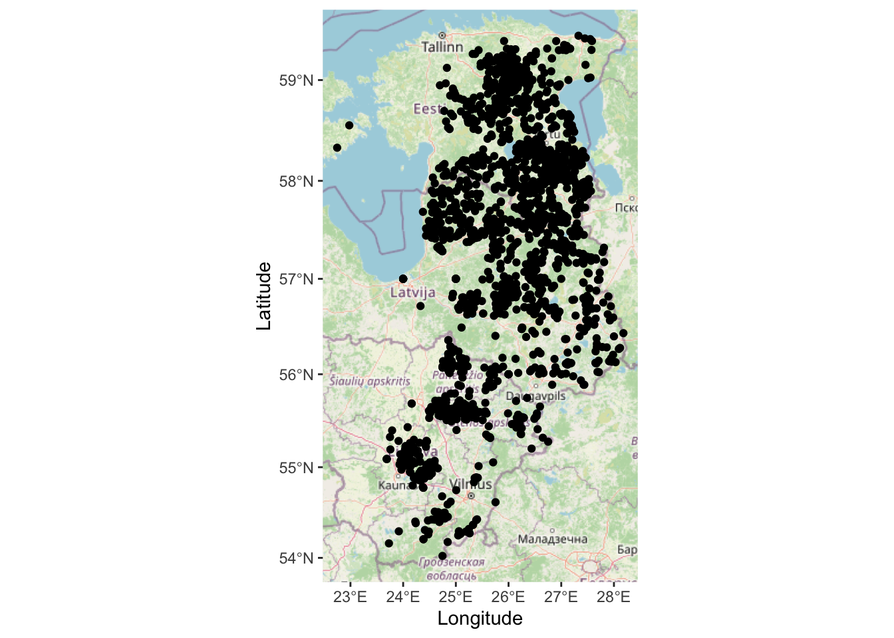
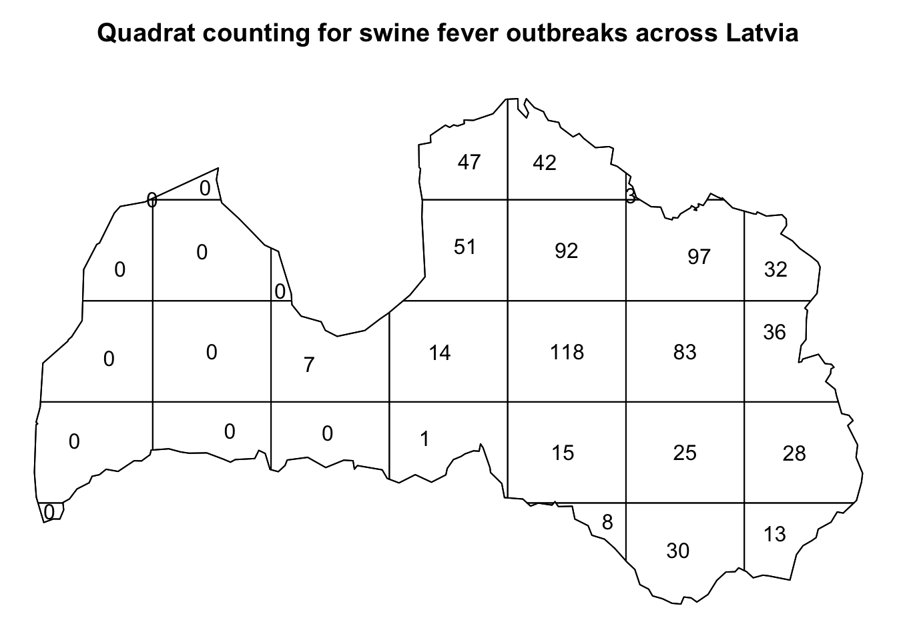
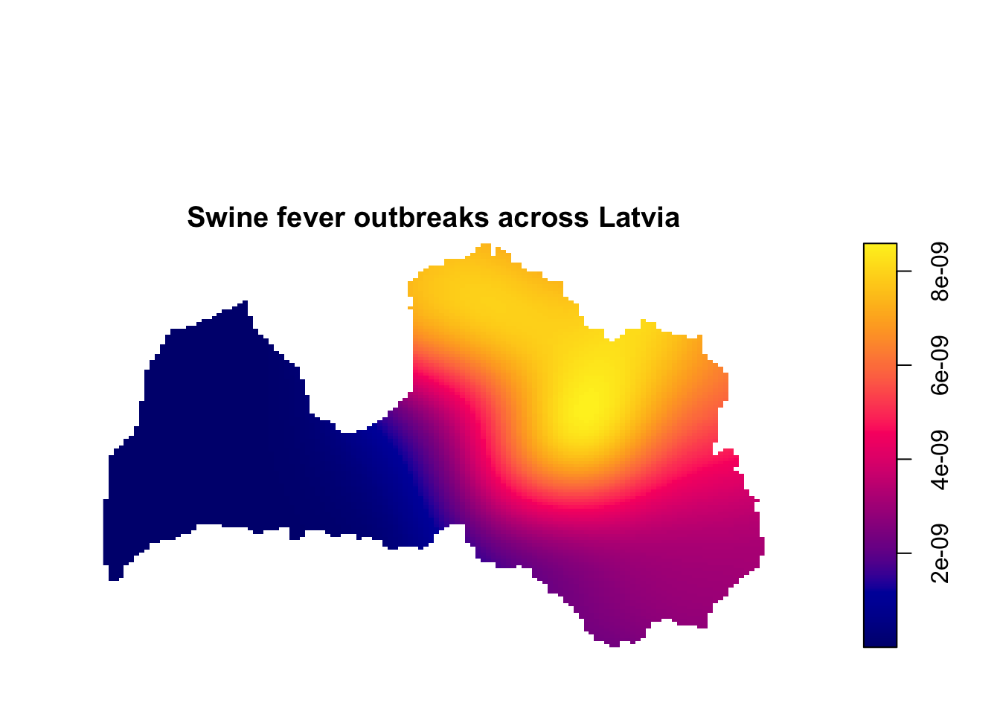
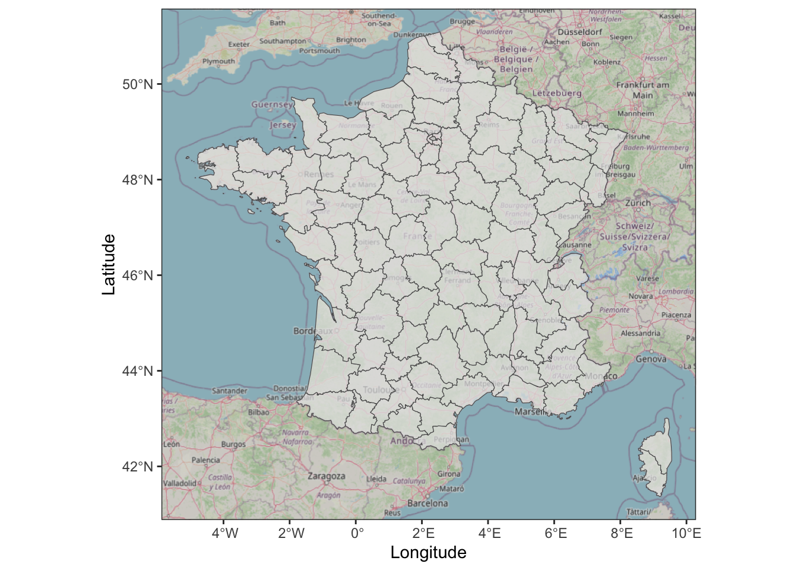
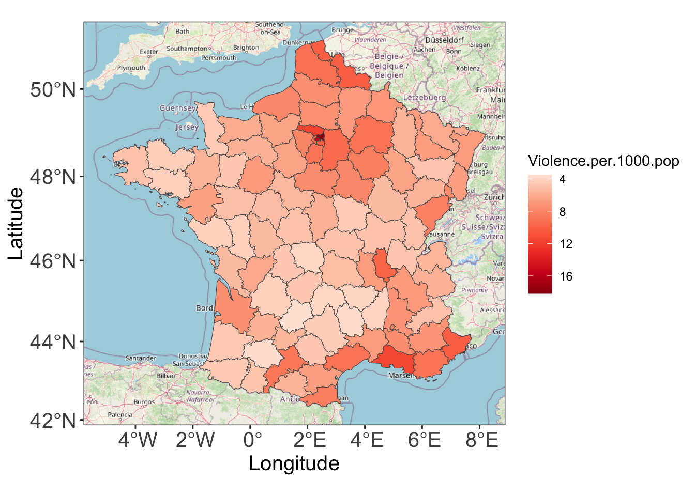
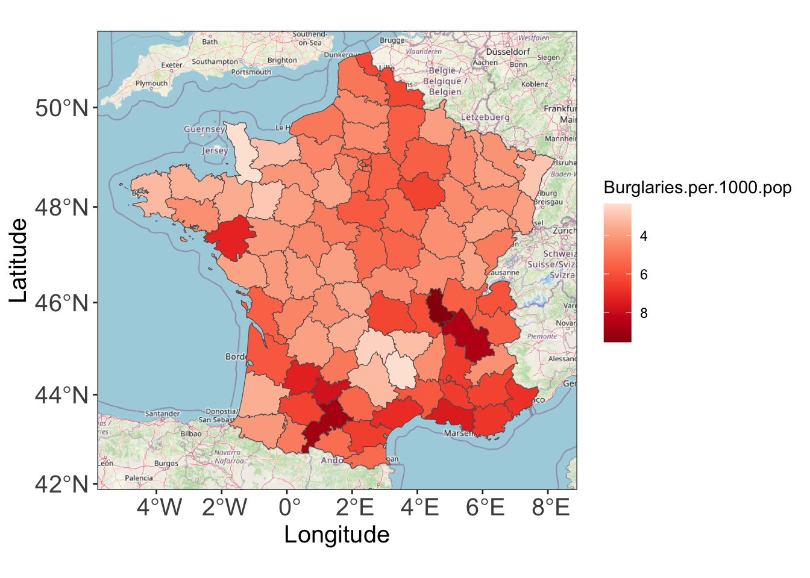

library( dplyr )
library( ggplot2 )
library( tidyr )
library( sf )
library( ggspatial )
library( prettymapr )
library( spatstat )
library( raster )MA22019 2025 - Solutions for Quiz 9
Mise en place
Quiz
Solutions
Overview
This week’s problem sheet focuses on the methods for analyzing point pattern and lattice/areal unit data in Sections 4.5-4.7 in the lecture notes. Exercises 1-2 help you with revising the content of the lecture in Week 9.
You may want to load the following packages before starting the exercise:
When working on a University PC, you will have to first install some of these packages.
Exercise 1 - Swine fever outbreaks across Europe
The file “Outbreaks.csv” contains the data for animal disease outbreaks between September 2015 and August 2017 as provided by the EMPRES Global Animal Disease Information System. Each entry in the data set specifies the location, date and type of disease for an individual outbreak. In this question we want to focus on the African swine fever that has affected large parts of Europe in the past years. Address the following three research tasks / questions and then complete the Moodle quiz.
- Which three countries were the worst affected in terms of the total number of outbreaks of African swine fever?
We start by loading the data frame containing the information about outbreaks:
Outbreaks <- read.csv("data/Outbreaks.csv")Since we want to focus on African swine fever, we have to remove all observations on other diseases from the data set:
SwineFever <- filter( Outbreaks, disease == "African swine fever" )Similar to the operations for data wrangling and text data analysis, we now count how iften each country appears in the data set, and we then print out the top three:
SwineFever %>%
count( country, sort=TRUE) %>%
slice_head( n=3 ) country n
1 Estonia 927
2 Latvia 742
3 Lithuania 615We find that the three Baltic states (Estonia, Latvia and Lithuania) had the highest number of outbreaks.
- Visualize the locations of outbreaks of African swine fever for the Baltic states (Estonia, Latvia and Lithuania). What do you conclude?
We want to focus on the Baltic states, and thus we have to extract the observations related to these countries from the data
SwineFever_Baltic <- SwineFever %>%
filter( country %in% c( "Estonia", "Latvia", "Lithuania" ) )We can now create a map using the techniques we covered in the lecture, and which already used for visualizing point-referenced data:
ggplot( SwineFever_Baltic, aes( x=longitude,y=latitude ) ) +
annotation_map_tile( zoom=6 ) + geom_spatial_point( ) +
labs( x="Longitude", y="Latitude" )
The map indicates that most outbreaks are in the eastern half of the Baltic states, with a particularly high numbers in Estonia and Latvia.
- Latvia has recorded a high number of outbreaks. Identify the parts of Latvia that observed a high frequency of swine fever outbreaks using quadrat counting or the kernel smoothed intensity function. Is it reasonable to conclude that the point process describing outbreaks of African swine fever across Latvia is homogeneous?
We now only focus on Latvia, so we have to extract the relevant data:
SwineFever_Latvia <- SwineFever %>% filter( country == "Latvia" )Using a shapefile for Latvia, we can construct the ppp object as demonstrated in the lecture notes:
Latvia <- read_sf( "Shapefiles/gadm41_LVA_0.shp" )
Latvia <- Latvia %>%
st_simplify( dTolerance = 1000 ) %>%
st_transform( crs=3857 )
SwineFever_transformed <- SwineFever_Latvia %>%
st_as_sf( coords=c("longitude","latitude"), crs=4326 ) %>%
st_transform( crs=3857 ) %>%
st_coordinates( )
Latvia_ppp <- ppp( SwineFever_transformed[,1],
SwineFever_transformed[,2],
window = as.owin(Latvia) )Let’s start by deriving the quadrat counting estimate:
par( mai=c(0.01,0.01,0.5,0.01) )
Latvia_Quadrats <- quadratcount( Latvia_ppp, nx=7, ny=5 )
plot( Latvia_Quadrats,
main="Quadrat counting for swine fever outbreaks across Latvia" )
While the plot above already provides sufficient information to answer the question, we also produce the kernel smoothed intensity function estimate fr illustration (in practice we only provide either the quadrat counting or kernel smoothed intensity plot):
par( mai=c(0.01,0.5,0.2,0.5) )
lambdaC <- density.ppp( Latvia_ppp, edge=TRUE )
plot( lambdaC, main="Swine fever outbreaks across Latvia" )
Both plots support our observations from part b) that hardly any outbreaks occur in the West of Latvia, while a high number of outbreaks is in the eastern half, in particular the north-eastern part of Latvia. Due to these large differences, we can conclude that the point process is non-homogeneous.
Exercise 2 - Crime rates across France
The file “Crimes France.csv” contains crime statistics from 2015 for all French départments (except Corsica). Specifically, for each department we are provided with the rate of burglaries and violence per 1,000 people. The file uses the UTF-8 encoding and you should ensure to specify this when loading the file. A shapefile for France with the départment boundaries is provided in the file “gadm41_FRA_2.shp”. Use the techniques for areal unit data to complete the following tasks and then go to Moodle and answer the quiz questions.
- Import the shapefile and create a map for France which includes the boundaries for the départments.
We start by loading the shapefile:
France <- read_sf( "Shapefiles/gadm41_FRA_2.shp" )We reduce the complexity of the shapefile using st_simplify():
France <- France %>% st_simplify( dTolerance = 1000 )We are now ready to plot the shapefile on top of a map:
ggplot( France ) + theme_bw() +
annotation_map_tile( zoom=6 ) +
geom_sf( data=France, alpha=0.7 ) +
labs( x="Longitude", y="Latitude" )
- Visualize the rate of violence per 1000 people per départment. Which areas should we have avoided in 2015 if we were concerned about violence?
We first load the data file and we have to specify the encoding in this case (otherwise the accents are not imported correctly):
Crime_France <- read.csv( "data/Crimes France.csv", header=TRUE, fileEncoding = "UTF-8" )Time to match the department names in the shapefile with that in the data file:
France <- inner_join( x=France, y=Crime_France, by=c("NAME_2"="Department") )We can now produce the map as seen in the data examples for lattice data in Section 4.7 of the lecture notes:
ggplot( ) +
annotation_map_tile( zoom=6 ) +
geom_sf( data=France, aes(fill=Violence.per.1000.pop) ) + theme_bw() +
scale_fill_distiller( palette="Reds", trans="reverse" ) +
theme( axis.title=element_text(size=15), axis.text=element_text(size=15) ) +
labs( x="Longitude", y="Latitude", color="Violence per 1000 people" )
The map shows that the highest violence rates were observed for Paris. High rates were also recorded along the French Riviera, around Paris, and in the northern départments close to the border with Belgium.
- Visualize the rate of burglaries per 1000 people per départment. What do you conclude?
We just need to change the variable we are plotting to create the plot for the rate of burglaries:
ggplot( ) +
annotation_map_tile( zoom=6 ) +
geom_sf( data=France, aes(fill=Burglaries.per.1000.pop) ) + theme_bw() +
scale_fill_distiller( palette="Reds", trans="reverse" ) +
theme( axis.title=element_text(size=15), axis.text=element_text(size=15) ) +
labs( x="Longitude", y="Latitude", color="Violence per 1000 people" )
We find that higher rates of burglaries were observed in southern France, with south-west France and the area around Lyon as the hotspots.